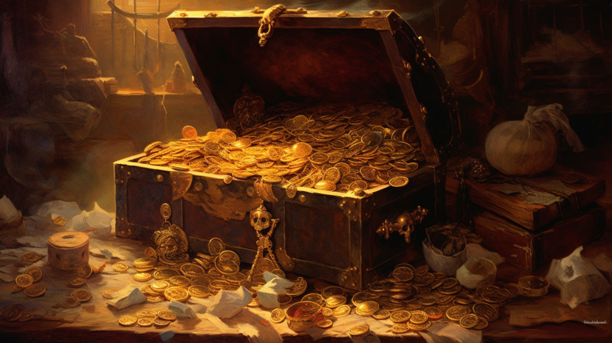
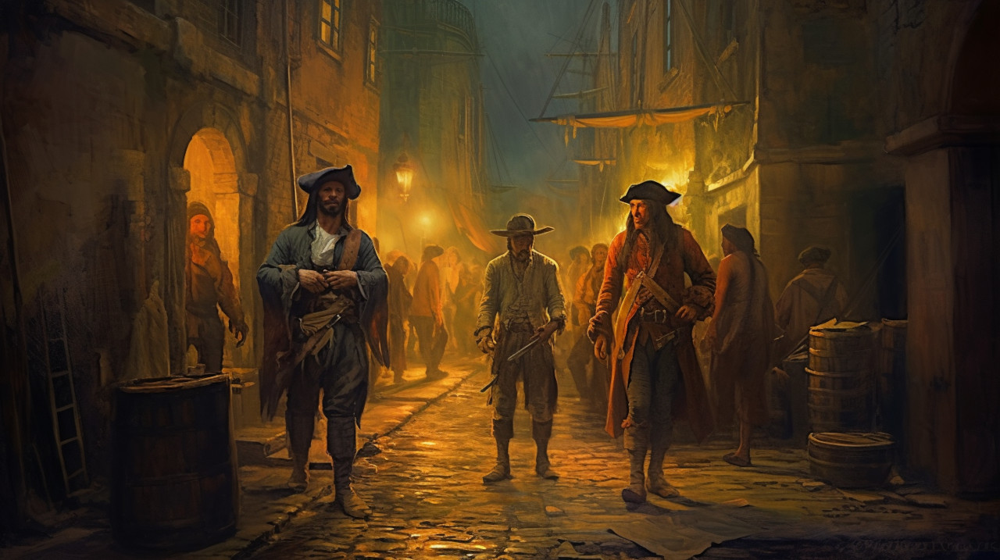

Присоединяйтесь к нам, когда мы отправляемся в бурные воды обширной истории пиратства. От первых морских мародеров до тайных операций современного пиратства мы прослеживаем эволюцию морского восстания. Раскройте изменения в военно-морской мощи, законодательстве и социально-экономических последствиях, вплетенных в этот сложный гобелен. Приготовьтесь к путешествию по обширным морским пейзажам пиратской истории, путешествию столь же увлекательному, сколь и глубокому.
В экономическом морском и культурном ландшафте пиратство сыграло неожиданно преобразующую роль. С экономической точки зрения пираты были непреднамеренными вдохновителями морских инноваций. Их разрушительная деятельность привела к совершенствованию конструкции кораблей, навигационных технологий и мер безопасности на море, что стало эффективным катализатором эволюции морской торговли. В культурном отношении пираты оставили неизгладимый след. Они не только являются предметом броских морских лачуг или создателей ярких трендов на тему попугаев. Пираты, олицетворяющие бунт, свободу и нонконформизм, глубоко укоренились в нашей популярной культуре. От культовых приключений Острова Сокровищ до экранных подвигов Джека Воробья пираты олицетворяют наше увлечение беззаконными и дерзкими выходцами из общества.
Политически и технологически пираты удивительным образом изменили наш мир. Несмотря на свой беззаконный образ, пиратские общества часто функционировали на принципах, близких к демократии и эгалитаризму, что резко контрастировало с жесткой иерархией той эпохи. Эти демократии открытого моря со своими кодексами и общей ответственностью косвенно повлияли на современные концепции лидерства и совместного управления. Кроме того, влияние пиратства сохранилось и в эпоху цифровых технологий, обозначив свою территорию в технологиях. От спорных сражений за права интеллектуальной собственности до перетягивания каната между шифрованием и правительственной слежкой дух пиратства не ослабевает в кибер-морях 21-го века. Пираты, кажется, продолжают формировать и бросать вызов нашему миру своими собственными дерзкими способами.
